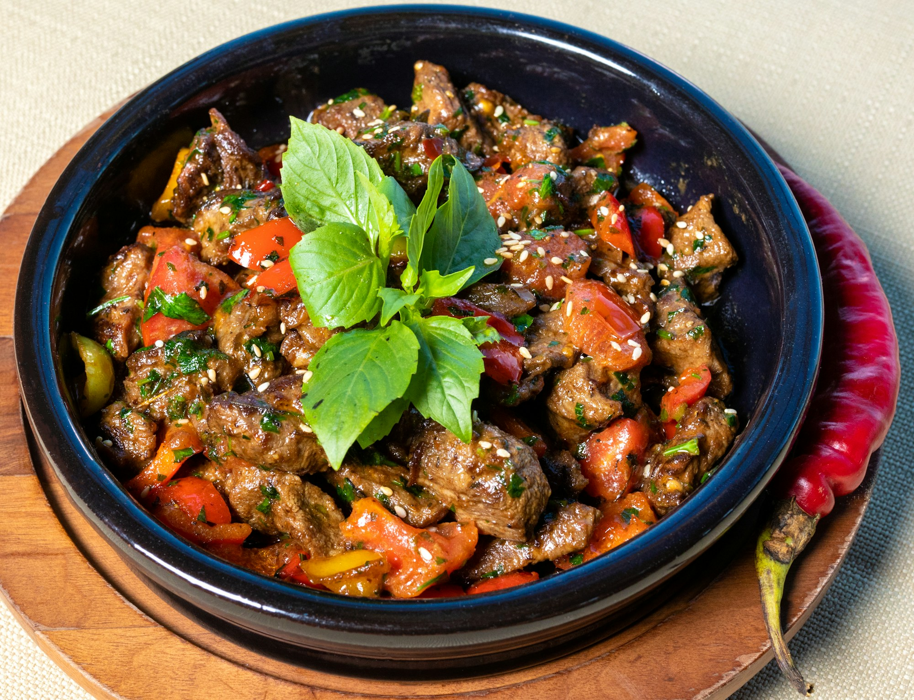
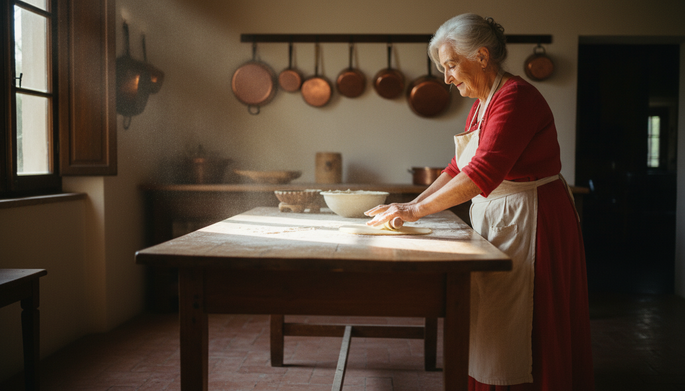
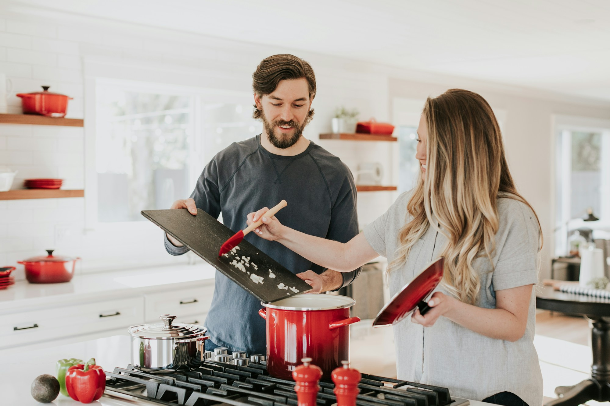
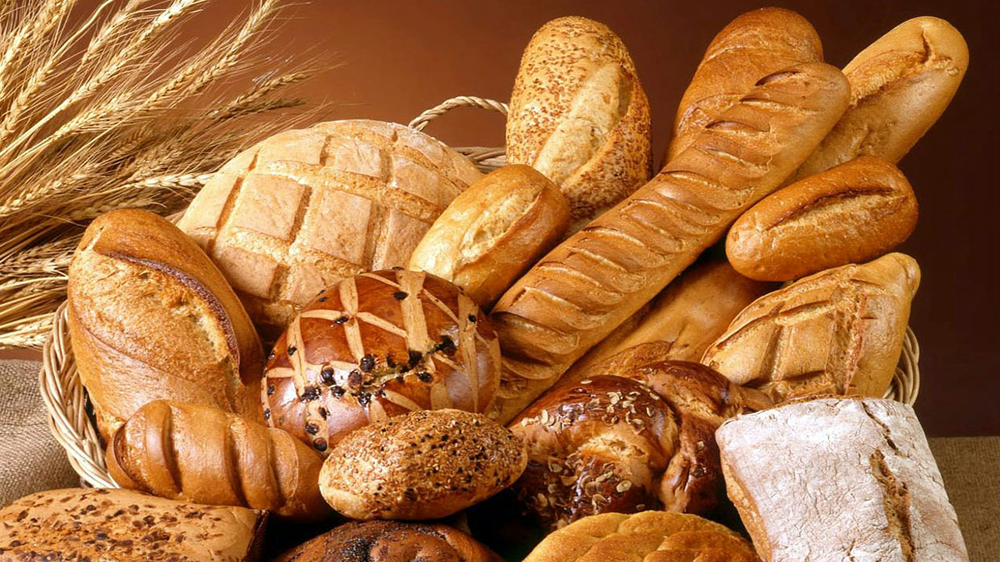
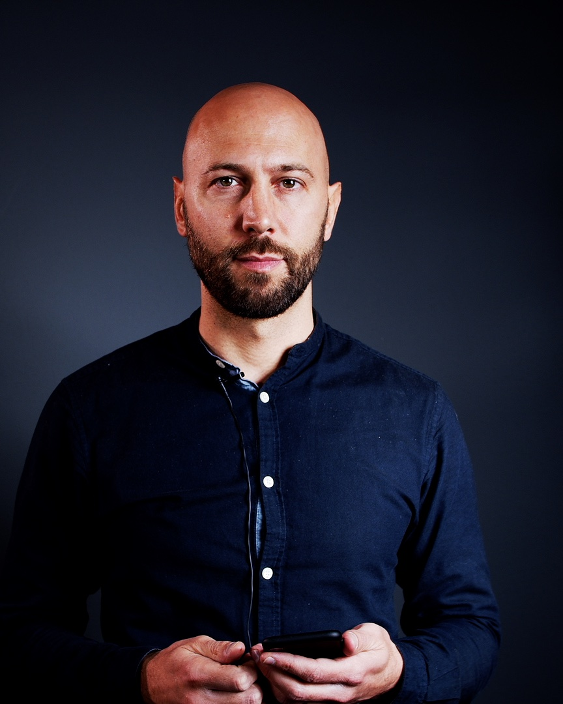
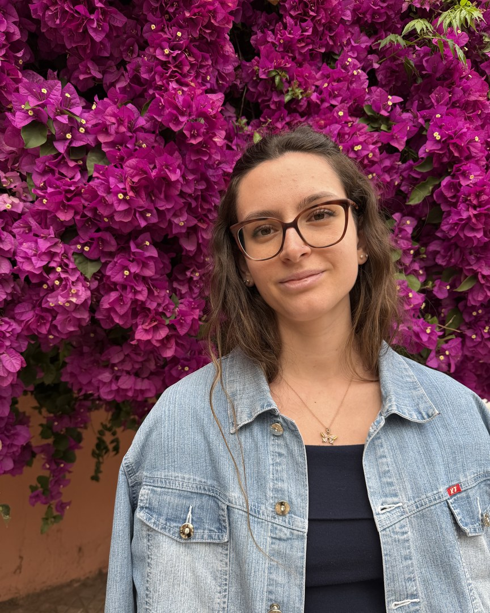
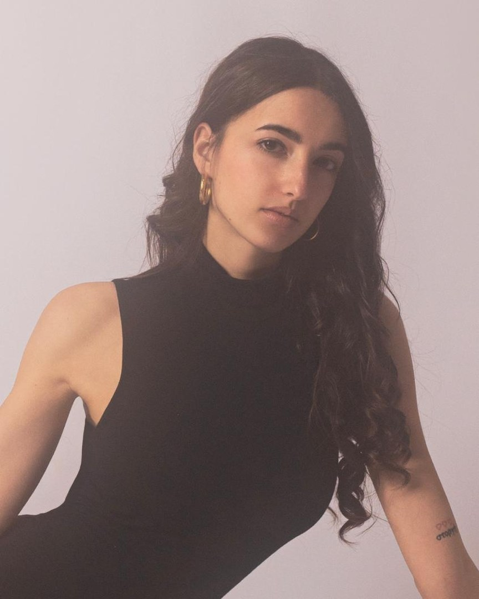

01
Record
Just press a button, our guided overlay captures every step, with automatic multilingual subtitles. No tripod, no editing.

Founded in Bologna · Cooking with the world since 2022
01 · Our Story
One Sunday morning in Romagna, five friends pulled up chairs around the same wooden table in Bologna. Between them, they had brought a yellowed recipe notebook — tomato stains, handwriting that leaned like a vine — borrowed from a grandmother’s kitchen drawer. They cooked from it together. None of them went home on time.
Those five friends — Nicola, Vittoria, Chiara, Nicola, and Alessia — became five co-founders that same evening. Each one brought their own family kitchen: Nonna Maura from the Marche, Nonna Paola from Emilia Romagna, Nonna Rosa from Basilicata, Nonna Irlanda from Lazio, and Nonno Nello from Campania. Five very different kitchens, one identical feeling — being somewhere that smelled like belonging.
So the five of them built what they wished they’d always had: a simple, beautiful way to record a grandmother cooking, share her recipes with anyone curious enough to cook them, and let her table travel.
— Nana was born on a long wooden table in Bologna, on 26 December 2022.
02 · Why now
A grandmother’s WhatsApp voice note explaining the dough for six minutes. A sauce-stained post-it on the fridge. A phone call at 6pm — “how much salt, really?”. Families have always found a way. Nana just gave that way a home, a table, and a passport.
We built Nana because technology finally caught up with tenderness — and because the warmest thing about a grandmother has always been that she cooks for people she’s never met. Now she can.
03 · Mission
One recipe, one table, one memory at a time.
04 · Vision
By 2035: one million recipes shared across five continents, one Sunday lunch at a time.
05 · How it works
Grandparents never needed apps or websites. The secret to their memorable recipes is a simple gesture: cooking for someone you love — and then letting them cook for someone else.

Just press a button, our guided overlay captures every step, with automatic multilingual subtitles. No tripod, no editing.

And so that precious audio clip, video, or old piece of paper comes together to form a timeless recipe book — always available and ready to be shared with everyone.

One more click and the family recipe is uploaded, available to everyone, ready to be discovered and recreated: Grandma’s table just got bigger.

Just one more click, and you’ll have the exact quantities and the same ingredients used in the original recipe delivered right to your house: everything you need to recreate the exact taste you remember from your childhood.
06 · The community cookbook
Different grandmothers, different recipes, different Sundays. Check out the different variations of the same recipes, order your basket, and give them a try!
07 · The community
Every tortellino has a twin in Tokyo. Our matching engine finds recipes that share the same heart across different traditions — gnocchi ↔ kopytka ↔ pierogi — and shows you what each nonna does differently. Two kitchens, one conversation.
For every recipe you post, you’ll earn Grandma’s Bonus. Collect them and spend them on someone else’s basket. Not just new flavors, but new friendships too.
08 · By the numbers
The timeline of a small idea that grew up at a dinner table — and what the community cookbook looks like today, counted in recipes and continents.
Nana is born on a long wooden table in Bologna — a recipe notebook rediscovered in Romagna.
First 12 families record recipes across five Italian regions.
Nana S.r.l. incorporated in Bologna.
€1.8M seed round led by United Ventures.
Launch in 47 countries. 37 000 recipes shared.
You’re invited to the table.
Top 8 countries by recipes shared — Q1 2026, rolling 90 days.
09 · Market validation & references
We didn’t guess this. The data did. A generation forgot how to cook from scratch — and then went looking, in 174 billion views, for someone’s grandmother to teach them. Below, the references that made us bold enough to build Nana — with a link to every source.
of millennials can’t cook three dishes from scratch — the transmission of regional kitchen skills is breaking.
Ye Olde Oak Survey, 2023views on #FoodTok — recipes are no longer printed: they are watched, learned, and shared as video.
TikTok Creative Center, 2024of TikTok users have cooked a recipe they discovered on the app — the loop from screen to stove already works.
Tubefilter / TikTok food study, 2026Pasta Grannies subscribers on YouTube — proof that the “nonna” format already has a global audience hungry for more.
YouTube channel data, 2024global meal kit market in 2025, growing at 12.4% CAGR — the “recipe + ingredients in a box” behaviour is mainstream.
Towards F&B Research, 2025Slow Food members across 150+ countries — a ready-made global community already defending food heritage.
Slow Food International, 2024Documents used to prepare this profile
10 · Our founders
From the Marche coast to the Campania hills, we grew up in five very different kitchens. The only thing we had in common was a grandparent who fed us — and a recipe we can’t stop telling anyone about.

Co-founder · CEO
🍝 Nonna Maura · Marche · cappelletti, vincisgrassi, olive all’ascolana.

Co-founder · CMO
vittoria.marcacci@nana.kitchen
🍅 Nonna Paola · Emilia Romagna · tortellini, ragù della domenica, piadina.

Co-founder · COO
🌶️ Nonna Rosa · Basilicata · peperoni cruschi, lagane e ceci, raschatell.

Co-founder · CFO
nicola.giovannelli@nana.kitchen
🍳 Nonna Irlanda · Lazio · carbonara, cacio e pepe, coda alla vaccinara.

Co-founder · CIO
🍆 Nonno Nello · Campania · parmigiana, ragù napoletano, sfogliatella.
Share your grandmother’s hands with the world. Or borrow someone else’s for Sunday lunch.
Join the tableTry it now
Point your phone at the code — and pass your nonna’s recipe to our table. Takes 30 seconds.
No camera? Open the form →Q&A
Questions, doubts, or another grandmother’s recipe to add to the table — the floor is yours.